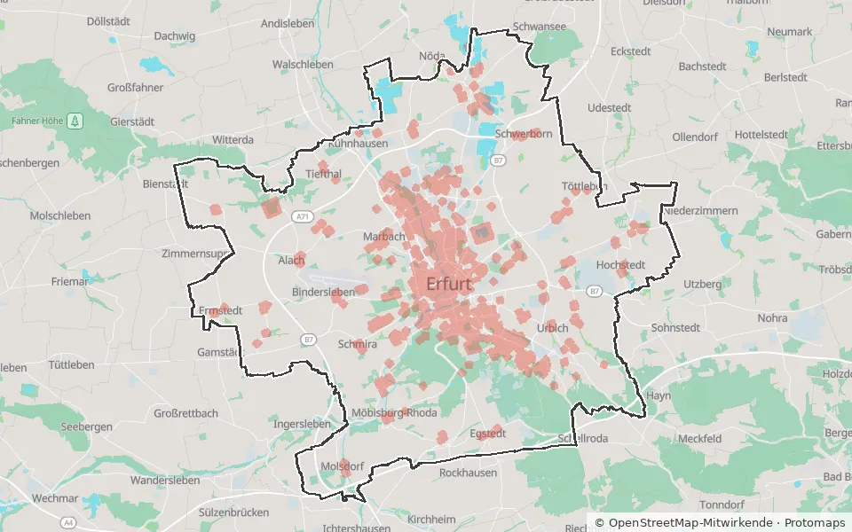
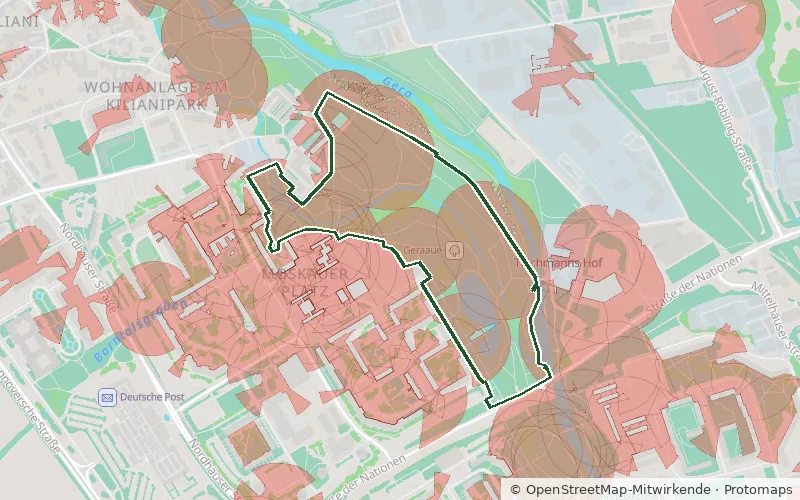
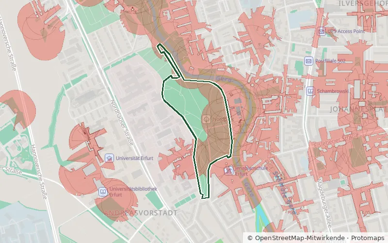
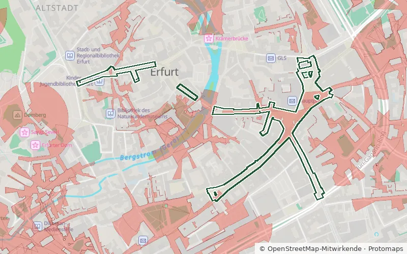
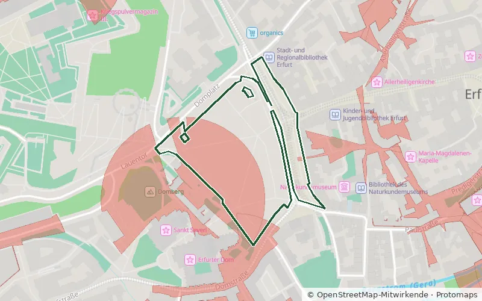
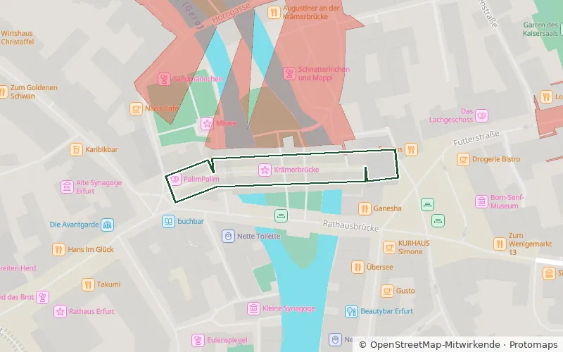
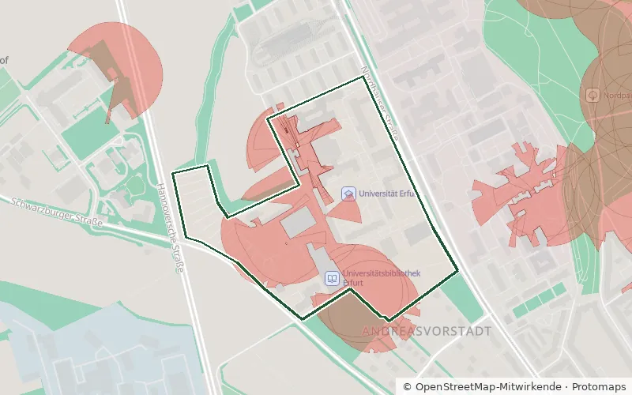

In Erfurt ist öffentliches Kiffen auf 18 km² verboten, das sind 6,7 % der Stadtfläche von 270 km². Grund sind 917 Einrichtungen wie Schulen und Spielplätze: In ihrer Sichtweite, bis 100 Meter vom Eingang und ohne Gebäude dazwischen, verbietet § 5 KCanG den Konsum. Dazu kommen die Fußgängerzonen der Altstadt von 7 bis 20 Uhr und überall die Gegenwart von Minderjährigen.
Wald gibt es wenig (9 % der Stadtfläche), vor allem den Steigerwald im Süden. Die Fußgängerzone der Altstadt ist klein; Domplatz und Krämerbrücke gehören nicht dazu.

Woher die Zonen kommen
| Einrichtung | Anzahl | Zonenfläche |
|---|---|---|
| Schulen | 92 | 4,1 km² |
| Kitas und Kindergärten | 101 | 3,2 km² |
| Kindertagespflege | 3 | 0,1 km² |
| Spielplätze | 311 | 6,2 km² |
| Kinder- und Jugendeinrichtungen | 22 | 0,5 km² |
| Sportstätten | 387 | 9,7 km² |
| Anbauvereinigungen | 1 | unter 0,1 km² |
Jede Art für sich gezählt, Überlappungen also mehrfach. Anbauvereinigungen nur, soweit in OpenStreetMap eingetragen.
Die meisten Zonen gehen auf die 387 Sportstätten zurück, danach auf die 311 Spielplätze. Auf Kinderspielplätzen verbietet die Stadtordnung außerdem das Rauchen, bis zu 5.000 Euro. Derselbe Paragraf verbietet Alkohol „in der Regel“ bis 100 Meter um Einrichtungen für Kinder und Jugendliche und um Suchtberatungsstellen, von 6 bis 20 Uhr und nur in Sichtachse; für Cannabis gilt das nicht (Stadtordnung, § 8a).
Geraaue, Nordpark und egapark
In der Geraaue liegen 88 % der Fläche in einer Zone: Fünf Spielplätze und vier Sportanlagen liegen im Park. Im Nordpark sind es 60 %, mit drei Sportanlagen und zwei Spielplätzen.


Der Badesee Nordstrand liegt ganz in einer Zone (100 %), der Stotternheimer See zu 38 %. Auf einem 100 Meter breiten Streifen Land entlang der Flüsse sind es 29 %. Im egapark verbietet die Parkordnung Cannabis auf dem ganzen Gelände, und das Rauchen auf den Spielplätzen (Parkordnung).
Altstadt
Fußgängerzonen sind nach einem Faltblatt der Stadt von 2013 Marktstraße, Fischmarkt, Schlösserstraße, der Anger und der nördliche Teil der Bahnhofstraße; Domplatz, Wenigemarkt und Krämerbrücke sind dort nicht eingezeichnet (Stadt Erfurt). In den Fußgängerzonen gilt von 7 bis 20 Uhr Konsumverbot; blau sind die Fußgängerbereiche aus OpenStreetMap.
Von Anger und Schlösserstraße liegen außerdem 38 % in einer Sichtweiten-Zone; Fischmarkt (0 %) und Krämerbrücke (0 %) liegen außerhalb. Vom Domplatz liegen 42 % in einer Zone, vom Hirschgarten vor der Staatskanzlei 99 %.



Auf dem Domplatz steht der Weihnachtsmarkt. Eine eigene Cannabisregel hat er nach Auskunft der Stadt nicht (dpa, November 2024); dort sind aber viele Kinder, und in ihrer Gegenwart gilt das Verbot ohnehin.
Universität
Hochschulen sind nach § 5 KCanG keine Verbotsorte. Vom Campus der Universität Erfurt liegen 40 % in einer Zone, um acht Spielplätze, zwei Sportanlagen und die Kita auf dem Campus.

Was sonst noch gilt
Einen Bußgeldkatalog für das Cannabisgesetz hat Thüringen nicht veröffentlicht. Zuständig für Verstöße gegen die Konsumverbote war nach Auskunft der Landesregierung von 2025 nicht die Stadt, sondern das Sozialministerium (Landtag, Drucksache 8/2178); das Gesetz erlaubt bis zu 30.000 Euro. Eigene Verbotszonen für Cannabis hat Erfurt nicht (Stand 27. November 2026).
Häufige Fragen
Wo darf man in Erfurt kiffen?
Nach § 5 KCanG außerhalb der roten Flächen, etwa im Steigerwald (6 % in einer Zone). Nicht auf Kinderspielplätzen, nicht im egapark, tagsüber nicht in den Fußgängerzonen, nie in Gegenwart von Minderjährigen. Weiß heißt nicht sicher erlaubt: Hecken, Bäume und fehlende Einrichtungen kennt die Karte nicht.
Wie genau ist das?
Täglich aus OpenStreetMap gerechnet, mit Gebäuden als Sichthindernis; die Zahlen hier sind vom 27. November 2026. Eine Orientierungshilfe, keine Rechtsauskunft (wie gerechnet wird).
Fehlt eine Einrichtung? Korrekturen in OpenStreetMap stehen am Tag darauf auf der Karte; bitte nur eintragen, was es vor Ort gibt.